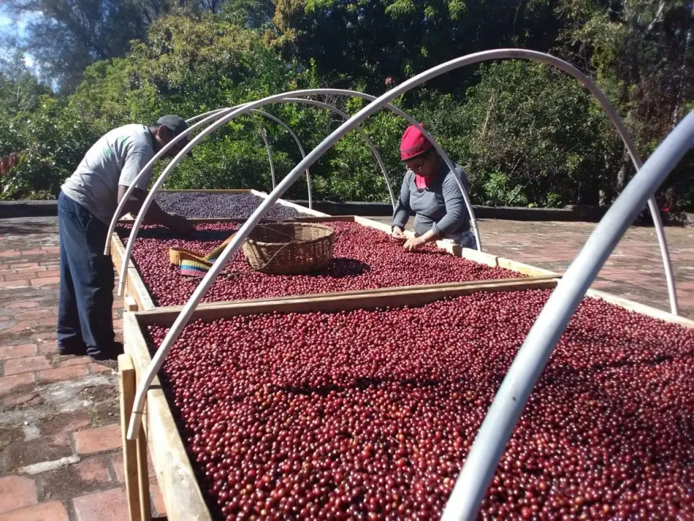
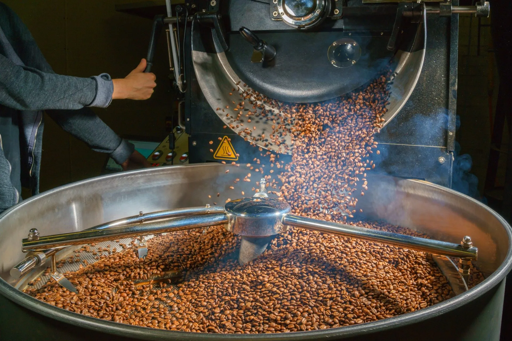

咖啡加工
咖啡从采收时的湿果到最后咖啡豆完全干燥的过程。因各产区条件不同，各产区都拥有不同的处理方式，概略可分为日晒法、水洗法、蜜处理、半日晒、半水洗。

咖啡烘培
咖啡生豆从浅焙、中焙到深焙，水分一次次释放，重量减轻，体积却慢慢膨胀鼓起，而咖啡豆的颜色加深，芬芳的油质逐渐释放出来，质地也变得爽脆。在生豆中，蕴涵大量的绿原酸，随着烘焙的过程，绿原酸会逐渐消失，释放出令人熟悉而愉悦的水果酸，如醋酸、柠檬酸和葡萄酒中所含的苹果酸。

冲煮方式
想要冲出一杯好喝的手冲咖啡，咖啡粉的颗粒要比浓缩咖啡大，更重要的是研磨度要均匀：颗粒太细的咖啡在与热水接触时经常会发生过度萃取的情形，将杂质一并溶出，结果带出咖啡的苦味、并使咖啡的香气模糊不和谐。至于粉末的颗粒大小则得依据手冲方式、冲煮分量（水量）和过滤方式来决定。